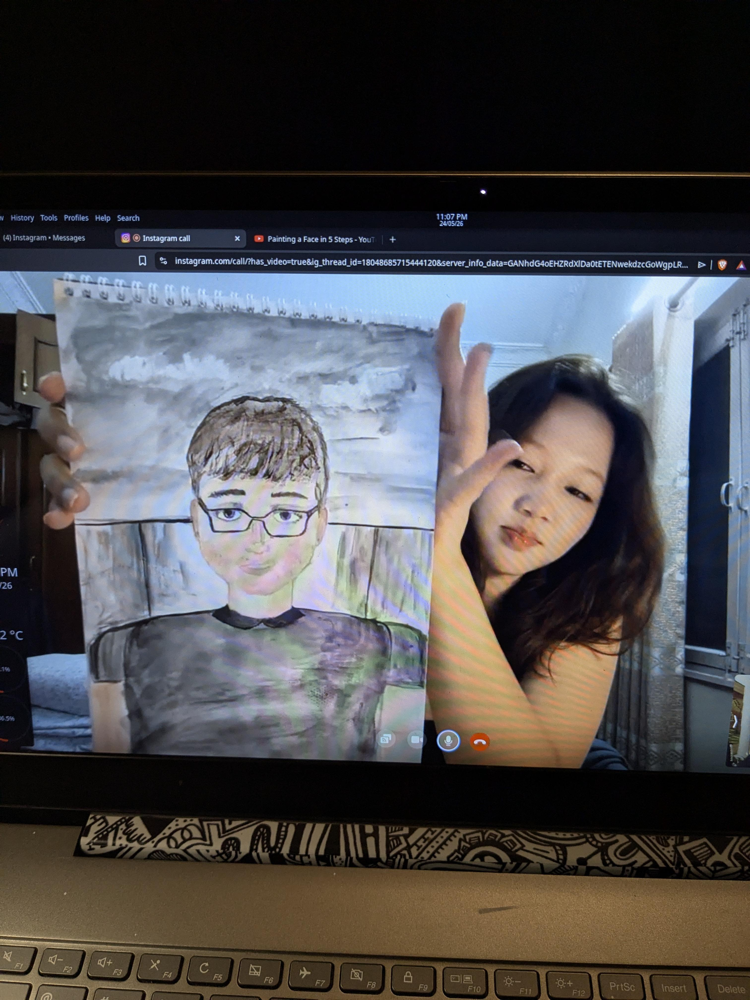

Pooks
I’ve been thinking about us a lot. About the things we got right, the things we got wrong, and all the moments in between and that I wish I had appreciated more while I was living them. I don’t think I ever really understood how exhausting things had become for you. I knew we were having the same conversations again and again, but I don’t think I understood what it was doing to you. You told me that arguments took everything out of you, and that even the good moments were beginning to feel smaller because of them. I’m sorry I let things get to that point. I know what I was doing. When you were busy, tired, or needed time to yourself, I would start feeling distant from you. Instead of dealing with that feeling myself, I would turn it into questions, accusations, or conversations about whether you loved me, whether you wanted this and that, whether I mattered enough. I did make you feel like you had to prove something that you had already tried to show me. And then, when things got bad, I would apologise because I wanted us to be okay. I understand why those apologies eventually stopped meaning much when the same things kept happening.
I think I was so afraid of not feeling loved that I sometimes failed to appreciate the ways you were already loving me. I know you tried. I know there were times you made an effort to make me happy even when you didn’t have much left to give. I wish I had made you feel appreciated for it instead of making you feel that it still wasn’t enough. I also realise that perhaps you kept too much inside until it became too much to carry. I wish we had made it easier for you to tell me when something was wrong before it turned into something neither of us knew how to handle. I never wanted us to be two people silently carrying hurt, only to let out when we’re already exhausted.
I don’t want to pretend that I had no needs of my own. I did. I wanted consistency, affection, effort, and to feel included in your life. I wanted to know that even when life got busy, we were still making a place for each other. Sometimes I felt like I was waiting for you, and I didn’t know how to handle that feeling. But I understand now that wanting those things doesn’t give me the right to make you feel guilty for needing space. I never wanted to be your entire world, Aasmi. I just wanted to know I had a place in it. And I should have learned to trust that place without asking you to prove it every time I felt uncertain.
I want you to know that I am not saying all this because I think a few paragraphs can suddenly fix what went wrong. I know I have to work on myself, especially on how I deal with uncertainty, how I communicate when I’m hurt, and how I respond when you need room to breathe. I do want to be able to give you the space without a test of how much you love me. I do want to listen without becoming defensive babes, and talk about difficult things without making them feel like arguments. I do want to understand you better, not just ask you to understand me.
And I do hope we can both learn to be honest with each other before things build up. I can respect your independence babes. I don’t need to be part of every moment or know every little thing. But I do want us to keep choosing each other even when life isn’t particularly romantic or convenient. To me, devotion never meant being together every second. It means knowing we’re on the same side. It’s us against the problem, never me against you.
I keep thinking about the little things. Days we spent, how excited we were, how much we laughed. I don’t know why these memories comes back so often, but it does. Maybe because it reminds me of how happy we could be just doing something ordinary together. I think that’s what I miss most: not some perfect version of us, but us. The stupid convos, smallest updates, hearing about your day. You telling me about the most ordinary thing that happened to you has genuinely been one of my favourite feelings.
And I hope you never forget how much I admire you. You call yourself God’s weakest soldier, but you’re honestly one of the strongest people I know. I know life hasn’t always been rainbows and colours on you, and I know you’ve carried things you haven’t always spoken about to anyone. I hope you keep becoming everything you want to be. I hope you find happiness in you, in your family, in your dreams, and in all the things that make you you. I never want loving me to feel like it came at the cost of any of that.
I don’t know what you’re thinking right now, and I won’t pretend that I do. When you said you were tired and didn’t want us to continue that conversation, I heard you. I know you need space, and I want to respect that. I’m not writing this to ask you for an answer or to make your birthday about us. I just didn’t want another important moment to pass without telling you what I should have told you much more often: I appreciate you. I am grateful for you. And I am sorry for the ways I made loving me harder than it needed to be.
I still don’t want to give up on us. Not saying this because I can’t imagine a life without you, or because I think you owe me another chance, but because what we shared means too much to me to walk away from without being honest about how much I still believe in it. If you ever choose to try again, I want us to build something gentler than what we had. I know that would take time, patience, and effort from both of us. I am willing to do my part, not just say the right things.
And if you really had decided that your path has to be different from mine no matter what, I will never hold that against you pooks. I’ll protect what we had and never forget what you meant to me. I will always be grateful that, even for a while, I got to call you my baby.
It’s your birthday this Monday. Happy birthday my love. I hope this year is kind to you. I hope you really celebrate and feel loved in all the ways you deserve.
I don’t know what the future holds for us. But if there’s ever a day when you look back and wonder whether I meant it when I said I wanted a life with you, I hope you remember this, I did. I still do. And if we ever find our way back to each other, I hope it’s not because we were afraid to let go, but only because we both found a better way to love.
Take care of yourself babes. Always.
